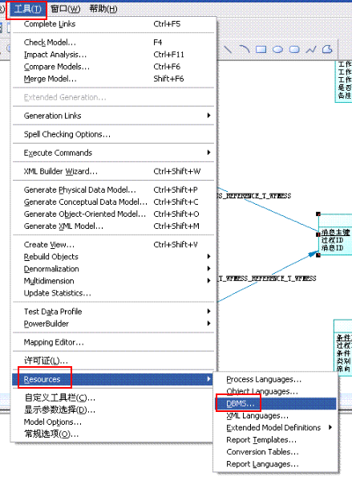
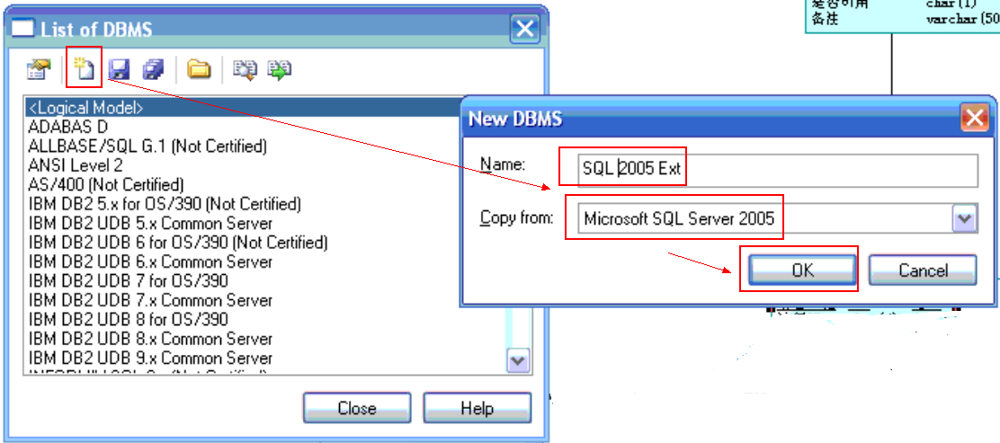
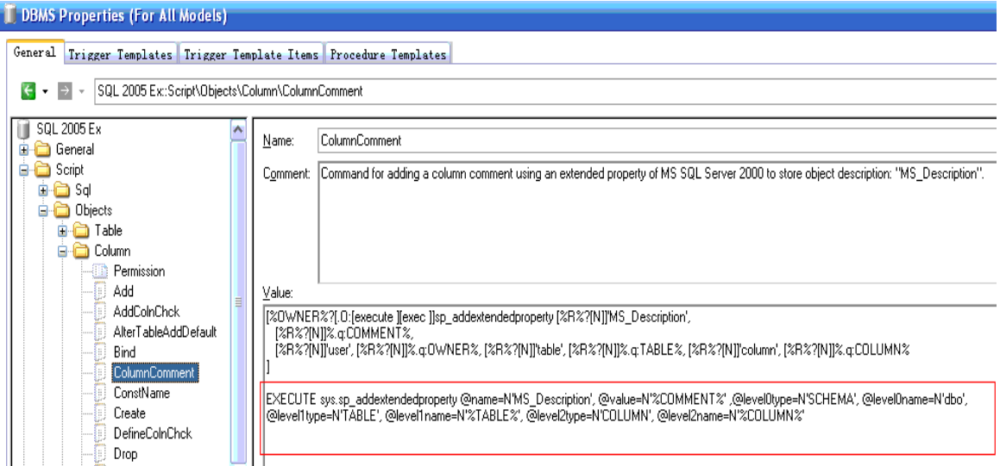
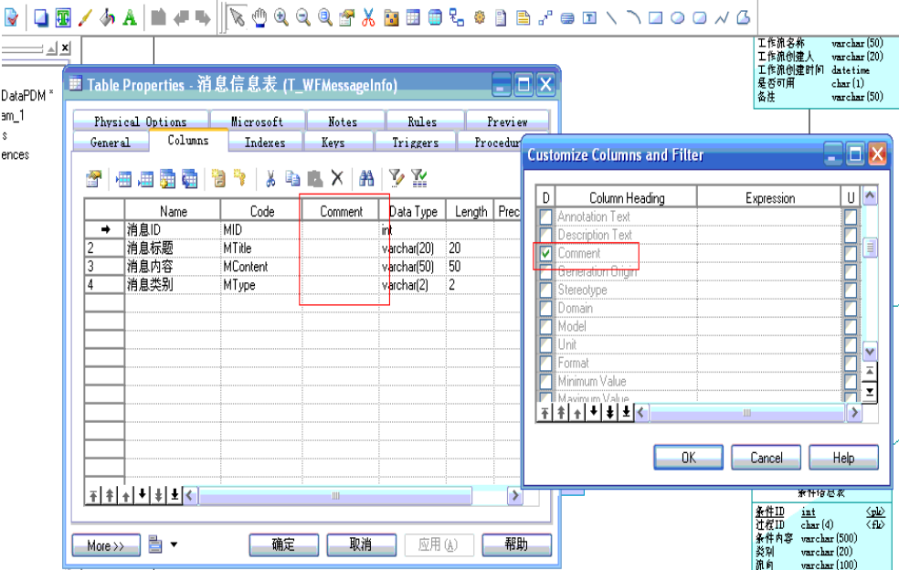

创建DBMS自定义数据模型xdb
- 从菜单 TOOLS->RESOUCES->DBMS ，进入自定义数据模型

PowerDesigner 弹出一个对话框，列表 框中列出了当前 PowerDesigner 支持的数据库模型
- 我们选择创建一个新的。输入名字 SQL SERVER 2005(EXTENDED)可自定义 ，选择从现有的
SQL SERVER 2000 复制，这样 SQL SERVER 2000(EXTENDED) 就包含了原来 SQL SERVER2000
模型拥有的所有特征（图 3 ）。

- 红色框起来的才是关键。(原来大哥说的过程在这里是不好使的。原因没有仔细考证过。)根据上面的图来设定注释,如果想把字段的NAME属性用作注释，可在SCRIPT脚本对应的地方改成“%NAME%”

- 修改脚本
1; 想要让我们写的注释代码起作用,一定要在表属性的general标签下 comment 项里添家内容. 否则表的注释不起作用.同样,在表属性的columns标签里,同样要在 comment 项里添家内容,否则列的注释同样不起作用. 2;表属性的columns 标签下,默认是没有 comment 项的,需要点columns 标签下右上角 带漏斗形状和一直笔的图标,在弹出的项中选择 comment 项,这时,columns标签下就有comment项了,添入内容,我们写的列的注释代码就起作用了.columns标签下默认的项有:name,code,type,p,F,M 3;变量COMMENT,TNAME,COLNNAME区分大小写,全部大写是正确的 4;如想用名字代替注释内容,在注释代码中表用N'%TNAME%',列用N'%COLNNAME%',代替N'%COMMENT%',很多朋友直接从网上拷贝的N'%NAME%'是错误的,即使不想显示COMMENT中的内容,在表,列的 COMMENT 项中也要输入数据,否则注释代码不执行.
代码如下：
EXEC sys.sp_addextendedproperty @name=N'MS_Description', @value=N'%COMMENT%', @level0type=N'SCHEMA',@level0name=N'dbo', @level1type=N'TABLE',@level1name=N'%TABLE%', @level2type=N'COLUMN',@level2name=N'%COLUMN%'
注意：数据模型建立完毕。如果想用Name列代替注释，可以把@value=N'%COMMENT%'改成@value=N'%COLNNAME%'。如果列的COMMENT 项中没有输入数据，注释代码不执行。